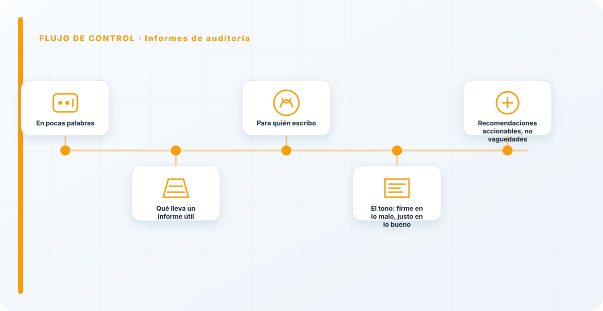
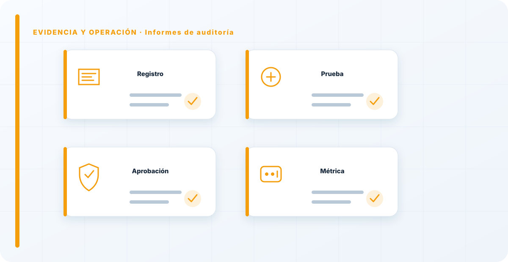

En pocas palabras
El informe es lo único que queda de una auditoría cuando el auditor se va, y por eso decide si todo el trabajo previo sirve para algo o se archiva y se olvida. Un buen informe no es una lista plana de todo lo que se miró; es un conjunto de hallazgos priorizados, cada uno con su evidencia, su impacto y una recomendación clara. Su objetivo no es lucir el rigor del auditor, es que la organización sepa qué arreglar primero y por qué. Un informe que no genera acciones es un informe fallido, por muy completo y técnicamente impecable que sea.
Qué lleva un informe útil
Cada hallazgo tiene que responder, sin rodeos, a cuatro cosas: qué pasa, qué evidencia lo sostiene, qué impacto tiene y qué recomiendo hacer. Si falta cualquiera de las cuatro, el hallazgo cojea: sin evidencia es una opinión, sin impacto no se puede priorizar, sin recomendación deja a la organización sabiendo que algo va mal pero no qué hacer al respecto.
Y todo va priorizado por severidad, que es lo que convierte una lista de problemas en un plan de acción:

Un informe que trata igual una no conformidad crítica y una observación menor obliga a quien lo lee a hacer el trabajo de priorizar, y normalmente no lo hace: o se paraliza ante la lista, o la ignora entera. Por eso ordeno por severidad y separo con claridad lo que hay que arreglar ya de lo que conviene mejorar cuando se pueda. La priorización no es cosmética; es la mitad del valor del informe.
Para quién escribo
Un informe de auditoría lo leen personas muy distintas: la dirección que decide y asigna presupuesto, y los equipos técnicos que van a arreglar. Escribir solo para uno de los dos públicos es un error clásico. Si escribo solo en técnico, la dirección no entiende el riesgo y no prioriza; si escribo solo en lenguaje de negocio, el equipo técnico no sabe qué tocar. Por eso cada hallazgo se entiende sin ser experto —el impacto explicado en términos de qué se arriesga, no solo de qué falla técnicamente— y a la vez lleva el detalle que el equipo necesita para actuar.
El impacto es la bisagra entre ambos mundos: traducir "el modelo no valida la entrada" a "esto permitiría que un tercero manipulara las respuestas que ven tus clientes" es lo que hace que una dirección no técnica entienda por qué debe importarle. Sin esa traducción, los hallazgos técnicos se quedan sin quien los priorice arriba.

El tono: firme en lo malo, justo en lo bueno
El tono de un informe decide, en gran parte, si se actúa sobre él o si pone a la organización a la defensiva. Soy firme y claro en lo que está mal —sin suavizarlo hasta hacerlo irreconocible— pero también justo con lo que está bien. Un informe que solo critica pierde credibilidad y provoca rechazo: la organización deja de escuchar y empieza a justificarse, y una organización a la defensiva no arregla nada, se defiende.
Reconocer lo que funciona no es un halago gratuito; es rigor. Si todo estuviera mal, el informe no sería creíble, porque nada está todo mal. Y reconocer los aciertos hace que las críticas se reciban como lo que son —observaciones para mejorar— y no como un ataque. El objetivo es que la organización quiera arreglar, no que se blinde.
Recomendaciones accionables, no vaguedades
Cierro cada hallazgo con una recomendación accionable, no con una vaguedad tipo "mejorar la seguridad" o "reforzar el gobierno", que no dicen nada y no llevan a ningún sitio. Accionable significa que quien lo lea sepa cuál es el siguiente paso concreto: qué control implantar, qué proceso cambiar, qué evidencia empezar a guardar. El informe se completa cuando la organización sabe exactamente por dónde empezar; si al terminar de leerlo no lo sabe, no he terminado mi trabajo.
Una recomendación buena es específica y realista a la vez: pedir lo imposible es tan inútil como pedir lo vago. Ajusto lo que recomiendo a lo que la organización puede de verdad hacer, priorizando lo que más reduce el riesgo con el menor esfuerzo, para que el plan de acción sea algo que se pueda ejecutar y no una lista de deseos.
El informe es el inicio, no el final
El error de ver el informe como el final de la auditoría es lo que hace que tantos acaben en un cajón. Para mí es justo lo contrario: es el inicio de la parte que de verdad importa, que es arreglar las cosas. Por eso un buen informe no solo lista hallazgos, sino que habilita el seguimiento: quién es responsable de cada acción, con qué plazo, y cómo se comprobará que se cerró de verdad y no solo sobre el papel.
Sin ese seguimiento, la auditoría se repite año tras año encontrando los mismos problemas, que es la señal más clara de que el informe no está cumpliendo su función. Un hallazgo se cierra cuando se arregla y se verifica, no cuando se escribe. El informe abre ese ciclo de mejora; la organización, con el seguimiento, es la que lo cierra.

El cierre y la respuesta de la organización
Un informe de auditoría no se entrega y ya está; se cierra en una conversación. La reunión de cierre es donde presento los hallazgos, escucho las matizaciones del auditado y me aseguro de que no hay malentendidos de hecho —a veces algo que parecía un hallazgo se aclara con un dato que yo no tenía, y a veces al revés—. Ese contraste final hace el informe más justo y, sobre todo, más difícil de ignorar después, porque la organización ya ha participado en él en lugar de recibirlo como una sentencia externa.
La organización tiene, además, derecho a responder. Una buena práctica es que a cada hallazgo le acompañe una respuesta de la dirección: si lo acepta, cómo piensa corregirlo, con qué plazo y quién es responsable. Esto transforma el informe de un documento del auditor en un plan compartido: yo señalo el problema, la organización se compromete a la solución. Y ese compromiso, por escrito, es lo que hace que el seguimiento posterior tenga sobre qué agarrarse. Sin respuesta de la dirección, el informe es una lista de reproches; con ella, es el arranque de un plan de acción con dueños y fechas.
Por último, cuido la redacción más de lo que parece necesario, porque los detalles de forma restan o suman credibilidad. Evito el lenguaje ambiguo que permite escaquearse ("se recomienda considerar la posibilidad de…"), las generalizaciones sin evidencia concreta, y el tono acusatorio que pone a la gente a la defensiva. Escribo hallazgos concretos, sostenidos en evidencia, con impacto claro y recomendación accionable. Un informe bien redactado es el que, meses después, cualquiera puede coger, entender qué había que hacer y comprobar si se hizo. Esa es la prueba final de que el informe cumplió su función: que sigue siendo útil cuando el auditor ya no está.
El resumen ejecutivo: una página que decide
Todo informe serio abre con un resumen ejecutivo de una página, y no es un adorno: es, muchas veces, lo único que lee quien más manda. La dirección rara vez recorre el informe entero; lee el resumen y decide a partir de él si esto merece su atención y su presupuesto. Por eso ese resumen tiene que contener, en pocas líneas y sin jerga, lo esencial: cuál es el estado general, cuáles son los dos o tres hallazgos que de verdad importan, y qué se juega la organización si no actúa.
Escribir bien ese resumen es un arte aparte: condensar sin mentir, priorizar sin ocultar, y traducir el riesgo técnico a consecuencias que una dirección entienda y le importen. Un informe con un resumen ejecutivo flojo desperdicia todo el trabajo de detalle que viene después, porque quien decide no llega a ese detalle. Un buen resumen, en cambio, hace que la dirección quiera saber más y priorice las acciones correctas. Es la página que convierte una auditoría rigurosa en decisiones reales.
Un informe de auditoría se mide por una sola cosa: ¿generó acciones? He visto informes de cien páginas técnicamente impecables que no movieron nada porque nadie los entendió o nadie supo por dónde empezar. Y he visto informes de diez páginas que cambiaron cómo trabajaba una organización entera. La diferencia no es el rigor —los dos lo tenían—, es la claridad, la priorización y la acción. Un hallazgo que no se entiende no se arregla nunca, por muy bien fundamentado que esté.
Los errores que veo una y otra vez
- Listas planas sin priorizar por severidad.
- Hallazgos sin recomendación accionable.
- Escribir solo en técnico o solo en negocio, y perder a un público.
- Solo críticas, sin reconocer lo que funciona, poniendo a la organización a la defensiva.
- Recomendaciones vagas tipo "mejorar la seguridad".
- Ver el informe como el final y no habilitar el seguimiento.
- Informes tan largos que nadie los lee ni actúa.
Referencias y marcos relacionados
Contenido educativo y técnico. No sustituye asesoramiento jurídico ni una auditoría formal.